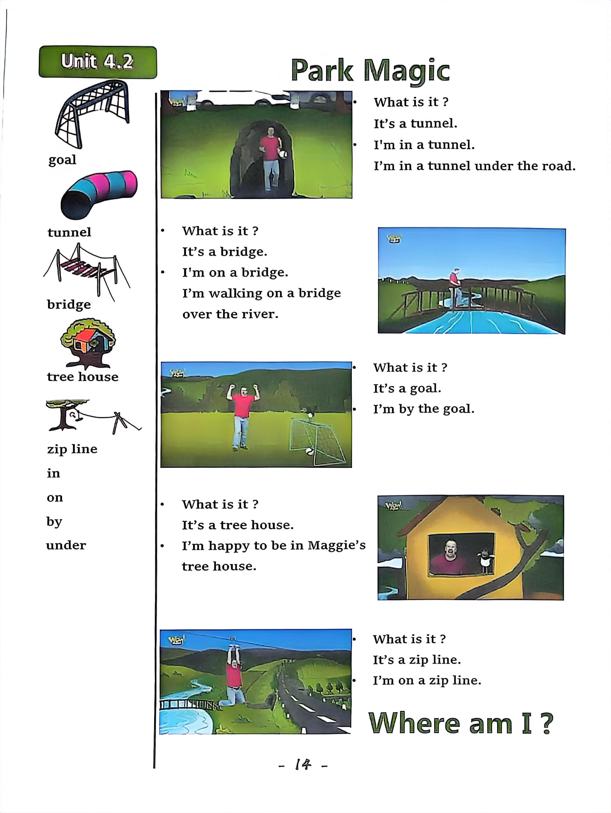

Day 14
Unit 5 · story
教材重点
教材重点依据网盘文件“第四级绿色每日打卡全.pdf”，PDF 第 16 页对应 Day 14；以原图为准，避免对图片文字做不可靠的自动识别。
网盘教材重点原图 · PDF 第 16 页对应 Day 14

Unit 5 · story · 6–7岁
monster · look · scary · say
Hello, hello, my name's Steve.
台词本为机器转写，可能存在识别误差；不等同于视频逐字原声。
详细内容
Part 1 核心词汇
必须掌握 · 4 个Part 2 跟读句型与句型拓展
左侧保留台词本原句，右侧为替换练习；拓展内容不是视频逐字台词。
Hello, hello, my name's Steve.
It's time to play. It's time to play in English.
Eyes, ears.
Mouth, nose and hair.
Hello, stay. How much.
Part 3 台词本全文
来源：第4级台词本 · 014.Wow!Green - Unit 5 story2.pdf。以下保留网盘 PDF 的机器转写文本，仅清理了文件路径页眉和空行。
Hello, hello, my name's Steve.
It's time to play. It's time to play in English.
Eyes, ears.
Mouth, nose and hair.
Hello, stay. How much.
Oh, no, look.
Look, there's a modest day now, oh, look, he's got three eyes.
How many eyes have you got here?
Two like me, look, they are eyes. What are they.
They are eyes, and again, what are they They are eyes. Oh, oh, maybe Maggie can help.
Maggie, maggie, hey, wait a minute.
Is Maggie, you naughty bird.
Her, what a scary mask. Her monster has got four ears.
How many years have you got here You've got two ears like me. So what are they.
They are ears, say with me, they are ears, and again, they are ears. Well done.
Hey, let's make a scary monster mask to scare, maggie, yeah, come on, let's go.
Hey, hi, look, I'm going to make my scary monster mask.
I'm going to start.
With a nose, yea, look, this is my nose. Hey, touch your nose and say with me, it's, ah knows, what is it.
It's a knows, what is it It's a nose. Yeah.
Hey, I could give my monster lots of noses.
But how many.
Hmm, oh, I could roll and dice. Maggie's got a dice, maggie, maggie, can I borrow your dice please.
No, steve, I'm playing a game, maggie, I need a dice now.
Okay, here you are.
Catch a rip at a brass, oh, hi, maggie, you naughty, naughty bird.
Oh, but look, six. HA, I'll give my monster six noses, oh, that'll be scary.
But how many eyes and ears let's roll the dice?
So how many eyes, oh, oh, four.
Four eyes, wow, that will be scary.
/
-
/4/014.Wow!Green - Unit 5 story2.txt[2022/3/29
星期二
6:49:29]
How many ears.
Oh, oh, hey, four ears. Wow. Okay. I'm going to start drawing, oh,
You, I, oh, nearly finished.
Don't be scared or because, look, ah, hey, it's a scary monster.
Oh, but what's missing?
Yeah, my monster hasn't got a mouth, no, so hey, say with me, what is it.
It's a mouth. What is it?
It's a mouth. What is it It's a mouth? Yeah, I'm going to finish my monster mask.
And then scare Maggie. Great.
I'm a monster.
Oh no, mike is not here.
Where is she Oh ha, HA, there she is wearing her monster mask outside.
But look, it's got crazy monster.
Hair, hey, this is hair, so touch your hair and say, with me, it's hair. What is it.
It's hair. What is it It's hair that's right. But Maggie, stop it and come here.
Here I am, steve. Hi. What.
Maggie, good, what.
Oh, it really is a monster. Oh, see you next time. Bye bye.
What day is white?